Libros de emociones y regulación emocional
Libros de emociones y regulación emocional en español: 62 libros completos para leer gratis aquí mismo y 31 fichas de títulos actuales.
Psicología de las emocionesResiliencia emocionalInteligencia emocionalRegulación emocionalIdentificación emocionalEtiquetado emocionalTolerancia al malestarMiedoAlegríaVergüenzaAceptación emocionalTeorías de la emociónCulpaExpresión emocionalEnvidiaResentimientoCelosNostalgiaFrustraciónCompasiónAmbivalencia emocionalIraTristezaAsco
Aprender desde las narrativas. Resiliencia, educación emocional y bienestar en la formación docenteMateu Pérez, Rosa; Escobedo Peiro, Paula; García Baldán, María Luisa; Flores-Buils, Raquel
Aprender desde las narrativas. Resiliencia, educación emocional y bienestar en la formación docenteMateu Pérez, Rosa; Escobedo Peiro, Paula; García Baldán, María Luisa; Flores-Buils, RaquelEstrés crónico, salud mental y perfiles emocionales en adolescentes : evidencia aplicada e insumos para políticas públicas en el Uruguay post COVID-19Brunet, Nicolás; Tórtora, Giuliana; Piñeiro, Mercedes; Sánchez, Fernanda; Agüero Michelin Salomón, Patricia; Borgarello, Luciana; Funcasta Duce, Lorena; Gotero, Agustina; Krul, Nadia
Estrés crónico, salud mental y perfiles emocionales en adolescentes : evidencia aplicada e insumos para políticas públicas en el Uruguay post COVID-19Brunet, Nicolás; Tórtora, Giuliana; Piñeiro, Mercedes; Sánchez, Fernanda; Agüero Michelin Salomón, Patricia; Borgarello, Luciana; Funcasta Duce, Lorena; Gotero, Agustina; Krul, NadiaAutogestión emocionalGarcía Sánchez, Rubén; López, Jorge S.; Martín López, María Jesús; Martínez, José Manuel; Ratón Berlanga, Marta; Soria-Oliver, María
Autogestión emocionalGarcía Sánchez, Rubén; López, Jorge S.; Martín López, María Jesús; Martínez, José Manuel; Ratón Berlanga, Marta; Soria-Oliver, MaríaEl proceso de duelo y emocionesLópez, Jorge S.; Martín López, María Jesús; Martínez, José Manuel; Ratón Berlanga, Marta; Soria-Oliver, María; García Sánchez, Rubén
El proceso de duelo y emocionesLópez, Jorge S.; Martín López, María Jesús; Martínez, José Manuel; Ratón Berlanga, Marta; Soria-Oliver, María; García Sánchez, RubénGestión emocional en el aulaBenítez Lugo, María Luisa
Gestión emocional en el aulaBenítez Lugo, María LuisaDesarrollo positivo adolescente: ¿qué papel tiene la inteligencia emocional, el estilo de afrontamiento y la asertividad en la prevención del consumo de cannabis?González Yubero, Sara; Gallego Álvarez, Teresa; Recio Moreno, David
Desarrollo positivo adolescente: ¿qué papel tiene la inteligencia emocional, el estilo de afrontamiento y la asertividad en la prevención del consumo de cannabis?González Yubero, Sara; Gallego Álvarez, Teresa; Recio Moreno, DavidHabilidades para el manejo de emociones en la adolescencia tempranaOrganización Mundial de la Salud
Habilidades para el manejo de emociones en la adolescencia tempranaOrganización Mundial de la SaludLa diversidad educativa en el desarrollo socioemocional: inteligencia emocional y altas capacidadesGallego Álvarez, Teresa; Recio Moreno, David; González Yubero, Sara
La diversidad educativa en el desarrollo socioemocional: inteligencia emocional y altas capacidadesGallego Álvarez, Teresa; Recio Moreno, David; González Yubero, SaraEmociones bailadas: Programa de Educación Emocional a través de la Danza de 6 a 12 añosHernaiz Borsten, Yaiza
Emociones bailadas: Programa de Educación Emocional a través de la Danza de 6 a 12 añosHernaiz Borsten, YaizaInteligencia emocional en entornos educativos: evidencias científicasSanchez-Gomez, Martin; BRESO, EDGAR; Adelantado-Renau, Mireia
Inteligencia emocional en entornos educativos: evidencias científicasSanchez-Gomez, Martin; BRESO, EDGAR; Adelantado-Renau, MireiaCompetencia emocional del alumnado de Magisterio: Materiales para la formación inicial desde el practicum. Experiencias de su puesta en prácticaMessina Albarenque, Claudia; Benito Ambrona, Tamara
Competencia emocional del alumnado de Magisterio: Materiales para la formación inicial desde el practicum. Experiencias de su puesta en prácticaMessina Albarenque, Claudia; Benito Ambrona, TamaraEstrategias de acompañamiento tutorial para el desarrollo de las emociones en el contexto de las prácticas de formación del profesoradoVaz Fernandes Catalino Procópio, Leandra; Sevilla Izquierdo, Carmen María
Estrategias de acompañamiento tutorial para el desarrollo de las emociones en el contexto de las prácticas de formación del profesoradoVaz Fernandes Catalino Procópio, Leandra; Sevilla Izquierdo, Carmen MaríaGuía del Programa Health-Friendly. Intervención para la disminución del miedo al entorno sanitario en niños y niñas de edad escolarEscalada Hernández, Paula; Ferraz Torres, Marta; San Martín Rodríguez, Leticia; Saralegui Gainza, Amaia; Soto Ruiz, María Nelia
Guía del Programa Health-Friendly. Intervención para la disminución del miedo al entorno sanitario en niños y niñas de edad escolarEscalada Hernández, Paula; Ferraz Torres, Marta; San Martín Rodríguez, Leticia; Saralegui Gainza, Amaia; Soto Ruiz, María NeliaManual para la participación activa y el acompañamiento emocional en la búsqueda de personas desaparecidas del Conflicto Armado InternoJave, Iris; Velázquez, Tesania; Rivera, Miryam
Manual para la participación activa y el acompañamiento emocional en la búsqueda de personas desaparecidas del Conflicto Armado InternoJave, Iris; Velázquez, Tesania; Rivera, MiryamTaller. Desarrollando mis competencias emocionales. Caminando hacia la resilienciaMojica Ramírez, Leticia
Taller. Desarrollando mis competencias emocionales. Caminando hacia la resilienciaMojica Ramírez, LeticiaConflictos, violencias y emociones en el ámbito educativoKaplan, Carina; Szapu, Ezequiel
Conflictos, violencias y emociones en el ámbito educativoKaplan, Carina; Szapu, EzequielConstruyamos alegrías : versión COVID-19Guzmán, Mariela; Tamborini Lallee, María Pía; Zapata, Paula Luciana; Devoto, Mario; Sosa, Lucrecia I.
Construyamos alegrías : versión COVID-19Guzmán, Mariela; Tamborini Lallee, María Pía; Zapata, Paula Luciana; Devoto, Mario; Sosa, Lucrecia I.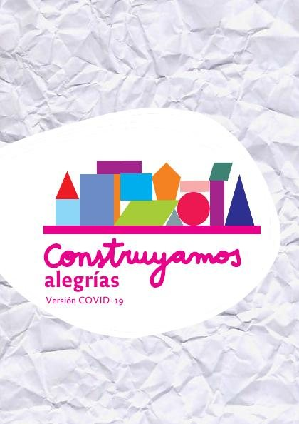
Subjetividades y emociones políticas en maestros y maestrasDuarte Duarte, Jakeline; Gómez Marín, Alexandra; Taborda Muñoz, Jennifer; Marín Posada, Mary Luz; Hernández Franco, Daniela; Rodas Ruiz, Juan Pablo; Pérez Uribe, Wilson
Subjetividades y emociones políticas en maestros y maestrasDuarte Duarte, Jakeline; Gómez Marín, Alexandra; Taborda Muñoz, Jennifer; Marín Posada, Mary Luz; Hernández Franco, Daniela; Rodas Ruiz, Juan Pablo; Pérez Uribe, Wilson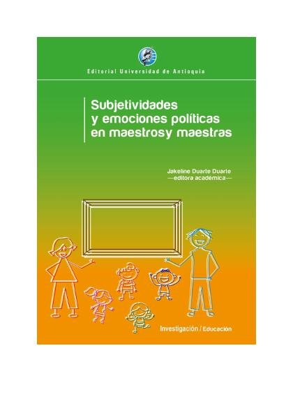
Vergüenza, Humillación y Aislamiento Social como Privación del BienestarPontificia Universidad Católica del Perú, Instituto de Desarrollo Humano de América Latina; Pontificia Universidad Católica del Perú, Instituto de Opinión Pública
Vergüenza, Humillación y Aislamiento Social como Privación del BienestarPontificia Universidad Católica del Perú, Instituto de Desarrollo Humano de América Latina; Pontificia Universidad Católica del Perú, Instituto de Opinión PúblicaEmociones políticas en niños y niñasDuarte Duarte, Jakeline; Gómez Marín, Alexandra; Marín Posada, Mary Luz; Saldarriaga Vélez, Jaime Alberto; Galeano Guevara, María Camila; Marín Ruiz, Maritza; Saraza Henao, Saraza Henao; López Olano, 
Emociones políticas en niños y niñasDuarte Duarte, Jakeline; Gómez Marín, Alexandra; Marín Posada, Mary Luz; Saldarriaga Vélez, Jaime Alberto; Galeano Guevara, María Camila; Marín Ruiz, Maritza; Saraza Henao, Saraza Henao; López Olano, Organizaciones emocionalmente inteligentes : experiencias en evaluación e intervenciónBRESO, EDGAR; Sanchez-Gomez, Martin
Organizaciones emocionalmente inteligentes : experiencias en evaluación e intervenciónBRESO, EDGAR; Sanchez-Gomez, MartinResiliencia, educación emocional y duelo. Formación para futuros docentesMATEU PÉREZ, ROSA; Escobedo Peiro, Paula; Flores Buils, Raquel
Resiliencia, educación emocional y duelo. Formación para futuros docentesMATEU PÉREZ, ROSA; Escobedo Peiro, Paula; Flores Buils, RaquelEl proceso emocional tras el diagnóstico por VIHSalmerón Sánchez, Pedro
El proceso emocional tras el diagnóstico por VIHSalmerón Sánchez, PedroJusticia intercultural y bienestar emocional : restableciendo vínculosAnsión, Juan; Peña Jumpa, Antonio; Rivera Holguín, Miryam; Villacorta Pino, Ana María
Justicia intercultural y bienestar emocional : restableciendo vínculosAnsión, Juan; Peña Jumpa, Antonio; Rivera Holguín, Miryam; Villacorta Pino, Ana María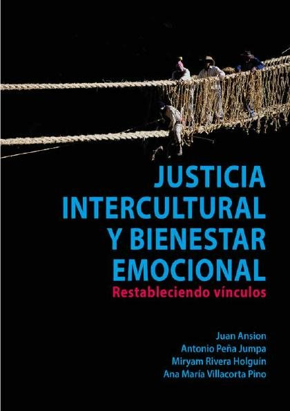
ATENCION A LAS PERSONAS CON MALESTAR EMOCIONALMarta Castelló Ma José Fernández de Sanmamed Judit García Ma Victòria Mazo Juan Manuel Mendive M. Mercè Rico Aurora Rovira Elena Serrano Francesca Zapater- FoCAP
ATENCION A LAS PERSONAS CON MALESTAR EMOCIONALMarta Castelló Ma José Fernández de Sanmamed Judit García Ma Victòria Mazo Juan Manuel Mendive M. Mercè Rico Aurora Rovira Elena Serrano Francesca Zapater- FoCAPEl bienestar emocionalMireia Cabero Jounou
El bienestar emocionalMireia Cabero JounouTiempo de elegir sin miedo. Memorias de una astrobiólogaSegura, Antígona
Tiempo de elegir sin miedo. Memorias de una astrobiólogaSegura, AntígonaEntre la psicología y la filosofía de William James : emociones y creenciasGarcía, Laura Inés; Saal, Aaron
Entre la psicología y la filosofía de William James : emociones y creenciasGarcía, Laura Inés; Saal, AaronSensibilidades en Juego: miradas múltiples desde los estudios sociales de los cuerpos y las emociones.Lisdero, Pedro (compilador); Scribano, Adrián (compilador)
Sensibilidades en Juego: miradas múltiples desde los estudios sociales de los cuerpos y las emociones.Lisdero, Pedro (compilador); Scribano, Adrián (compilador)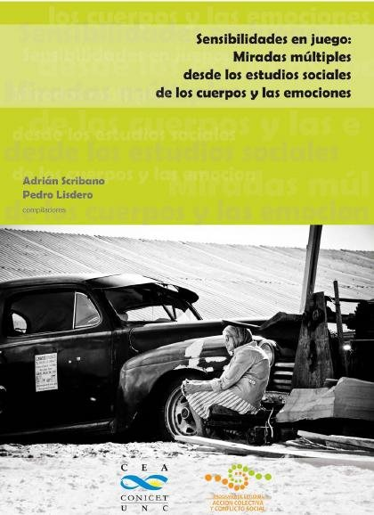
Manual de prácticas de motivación y emociónPalmero, Francisco; Gómez-Íñiguez, Consolación; Guerrero Rodríguez, Cristina; Carpi Ballester, Amparo
Manual de prácticas de motivación y emociónPalmero, Francisco; Gómez-Íñiguez, Consolación; Guerrero Rodríguez, Cristina; Carpi Ballester, AmparoCulpabilidad-responsabilidadTerradillos Basoco, Juan María
Culpabilidad-responsabilidadTerradillos Basoco, Juan MaríaPropuestas pedagógicas para educar las emocionesNúñez Cubero, Luis; Bisquerra Alzina, Rafael; González Monteagudo, José; Gutiérrez Moar, Mª Carmen
Propuestas pedagógicas para educar las emocionesNúñez Cubero, Luis; Bisquerra Alzina, Rafael; González Monteagudo, José; Gutiérrez Moar, Mª CarmenEducación emocional y transformación de la escuela públicaCerda, Ana María
Educación emocional y transformación de la escuela públicaCerda, Ana MaríaInteligencia emocional. Reconceptualización de la inteligencia y una carrera hacia el éxitoLaura Elescano, Luz
Inteligencia emocional. Reconceptualización de la inteligencia y una carrera hacia el éxitoLaura Elescano, LuzBases sociales de la emociónLeón Rubio, José María; Medina Anzano, Silvia; Barriga Jiménez, Silverio; Cantero Sánchez, Francisco Javier
Bases sociales de la emociónLeón Rubio, José María; Medina Anzano, Silvia; Barriga Jiménez, Silverio; Cantero Sánchez, Francisco JavierLa expresión de las emociones en el hombre y en los animalesDarwin, Charles, 1809-1882; Heras Hernández, Eusebio
La expresión de las emociones en el hombre y en los animalesDarwin, Charles, 1809-1882; Heras Hernández, EusebioAbel SánchezMiguel de Unamuno
Abel SánchezMiguel de UnamunoCuentos de amor de locura y de muerteHoracio Quiroga
Cuentos de amor de locura y de muerteHoracio QuirogaEl amigo MansoBenito Pérez Galdós
El amigo MansoBenito Pérez GaldósFortunata y JacintaBenito Pérez Galdós
Fortunata y JacintaBenito Pérez GaldósInsolación y MorriñaEmilia Pardo Bazán
Insolación y MorriñaEmilia Pardo BazánLa RegentaLeopoldo Alas «Clarín»
La RegentaLeopoldo Alas «Clarín»La de BringasBenito Pérez Galdós
La de BringasBenito Pérez GaldósLa desheredadaBenito Pérez Galdós
La desheredadaBenito Pérez GaldósLa sirena negraEmilia Pardo Bazán
La sirena negraEmilia Pardo BazánMiauBenito Pérez Galdós
MiauBenito Pérez GaldósMisericordiaBenito Pérez Galdós
MisericordiaBenito Pérez GaldósNovelas ejemplaresMiguel de Cervantes
Novelas ejemplaresMiguel de CervantesPepita JiménezJuan Valera
Pepita JiménezJuan ValeraApoyo y refuerzo como estrategia afectiva y pedagógica en educación superiorGavín-Chocano, Óscar
Apoyo y refuerzo como estrategia afectiva y pedagógica en educación superiorGavín-Chocano, ÓscarConóceme, escúchame y guíame. Programa para madres y padres sobre las competencias emocionales y cómo potencializarlas en sus pequeños y pequeñasCabrera Schevenin, Sofía Alejandra
Conóceme, escúchame y guíame. Programa para madres y padres sobre las competencias emocionales y cómo potencializarlas en sus pequeños y pequeñasCabrera Schevenin, Sofía AlejandraLos agentes del cambio: la educación emocional para educadoras y técnicos en educación parvulariaAranguren Arpon, Camila Paz
Los agentes del cambio: la educación emocional para educadoras y técnicos en educación parvulariaAranguren Arpon, Camila PazInteligencia emocional, febrero 2019Cabero Jounou, Mireia
Inteligencia emocional, febrero 2019Cabero Jounou, MireiaMotivación y emoción, septiembre 2019Limonero, Joaquín T.; Alvarez Moleiro, Maria; Rovira, Tatiana; Sanz, Antoni; Casacuberta, David; Villamarín Cid, Francisco; Baena, Antoni; Mañas Mañas, Israel; Moreno Sánchez, Jordi; Quesada Laborda,
Motivación y emoción, septiembre 2019Limonero, Joaquín T.; Alvarez Moleiro, Maria; Rovira, Tatiana; Sanz, Antoni; Casacuberta, David; Villamarín Cid, Francisco; Baena, Antoni; Mañas Mañas, Israel; Moreno Sánchez, Jordi; Quesada Laborda, Motivación y emoción. Módulo 2: EmociónJoaquín T. Limonero, Maria Álvarez Moleiro, Tatiana Rovira
Motivación y emoción. Módulo 2: EmociónJoaquín T. Limonero, Maria Álvarez Moleiro, Tatiana RoviraE-mociones. Sin emoción no hay educaciónForés i Miravalles, Anna
E-mociones. Sin emoción no hay educaciónForés i Miravalles, AnnaEl coaching emocionalMireia Cabero Jounou
El coaching emocionalMireia Cabero JounouEl papel de la institución educativa en la educación emocionalNúñez Cubero, Luis; Bisquerra Alzina, Rafael; González Monteagudo, José; Gutiérrez Moar, Mª Carmen
El papel de la institución educativa en la educación emocionalNúñez Cubero, Luis; Bisquerra Alzina, Rafael; González Monteagudo, José; Gutiérrez Moar, Mª CarmenLa tristeza contemporanea : ensayo sobre las grandes corrientes morales e intelectuales del siglo XIXFierens-Gevaert, H.
La tristeza contemporanea : ensayo sobre las grandes corrientes morales e intelectuales del siglo XIXFierens-Gevaert, H.La tía TulaMiguel de Unamuno
La tía TulaMiguel de UnamunoTormentoBenito Pérez Galdós
TormentoBenito Pérez GaldósTres novelas ejemplares y un prólogoMiguel de Unamuno
Tres novelas ejemplares y un prólogoMiguel de UnamunoCómo ser un estoicoMassimo Pigliucci
Cómo ser un estoicoMassimo Pigliucci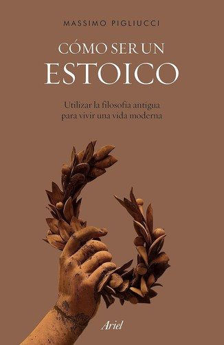
Permiso para sentirMarc Brackett
Permiso para sentirMarc Brackett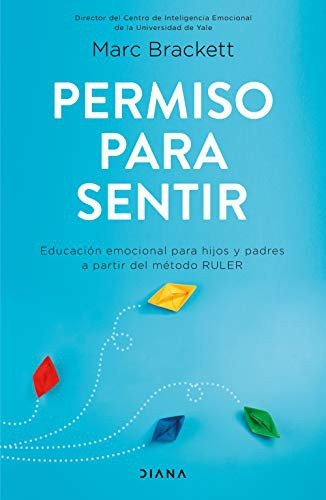
El túnelErnesto Sabato
El túnelErnesto SabatoLa paradoja del chimpancéSteve Peters
La paradoja del chimpancéSteve PetersAgilidad emocionalSusan David
Agilidad emocionalSusan David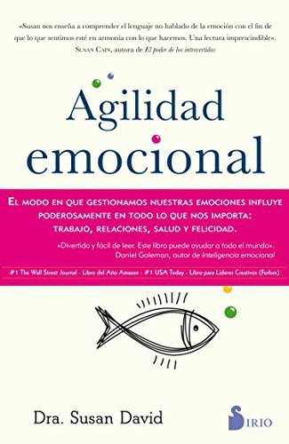
La vida secreta del cerebroLisa Feldman Barrett
La vida secreta del cerebroLisa Feldman Barrett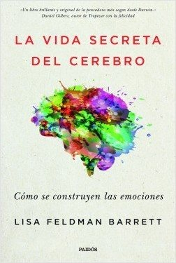
El libro de las pequeñas revolucionesElsa Punset
El libro de las pequeñas revolucionesElsa PunsetSé amable contigo mismoKristin Neff
Sé amable contigo mismoKristin NeffUn monstruo viene a vermePatrick Ness
Un monstruo viene a vermePatrick NessBrújula para navegantes emocionalesElsa Punset
Brújula para navegantes emocionalesElsa PunsetComo agua para chocolateLaura Esquivel
Como agua para chocolateLaura EsquivelLa edad de la empatíaFrans de Waal
La edad de la empatíaFrans de WaalEmocionario. Di lo que sientesCristina Núñez Pereira y Rafael R. Valcárcel
Emocionario. Di lo que sientesCristina Núñez Pereira y Rafael R. Valcárcel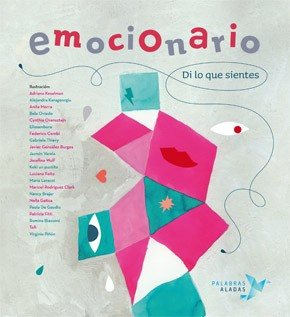
Emociones tóxicasBernardo Stamateas
Emociones tóxicasBernardo StamateasBienvenido dolorPilar Sordo
Bienvenido dolorPilar SordoEl monstruo de coloresAnna Llenas
El monstruo de coloresAnna Llenas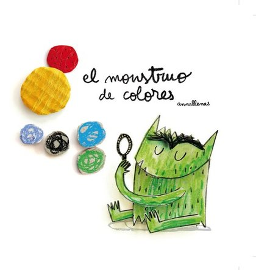
Los dones de la imperfecciónBrené Brown
Los dones de la imperfecciónBrené BrownCometas en el cieloKhaled Hosseini
Cometas en el cieloKhaled HosseiniAnatomía del miedoJosé Antonio Marina
Anatomía del miedoJosé Antonio MarinaNo te ahogues en un vaso de aguaRichard Carlson
No te ahogues en un vaso de aguaRichard Carlson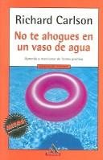
Emociones destructivasDaniel Goleman
Emociones destructivasDaniel GolemanLa sabiduría de las emocionesNorberto Levy
La sabiduría de las emocionesNorberto Levy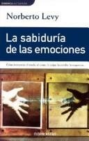
El extranjeroAlbert Camus
El extranjeroAlbert CamusRebecaDaphne du Maurier
RebecaDaphne du MaurierTus zonas erróneasWayne W. Dyer
Tus zonas erróneasWayne W. DyerEl miedo es de valientesJulio de la Iglesia
El miedo es de valientesJulio de la IglesiaInteligencia emocionalDaniel Goleman
Inteligencia emocionalDaniel GolemanLos patitos feos. La resiliencia: una infancia infeliz no determina la vidaBoris Cyrulnik
Los patitos feos. La resiliencia: una infancia infeliz no determina la vidaBoris CyrulnikContra la empatíaPaul Bloom
Contra la empatíaPaul BloomEl poder de ser vulnerableBrené Brown
El poder de ser vulnerableBrené BrownVivir sin miedosSergio Fernández
Vivir sin miedosSergio FernándezTemas relacionados
¿Estás eligiendo carrera?
Haz gratis el test de orientación vocacional de AURZANE: intereses, aptitudes, autoconcepto y hábitos de estudio, con informe completo.